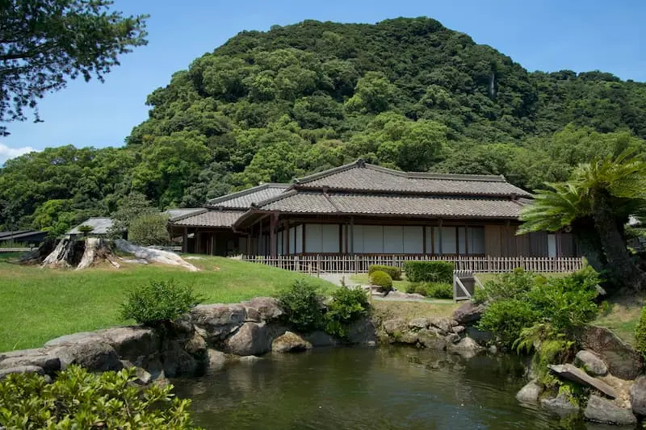
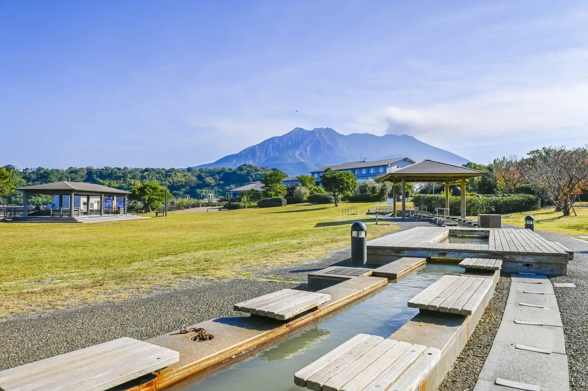
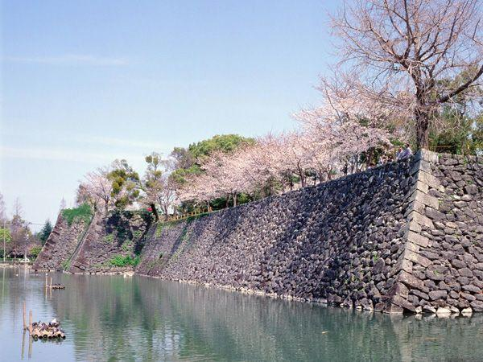
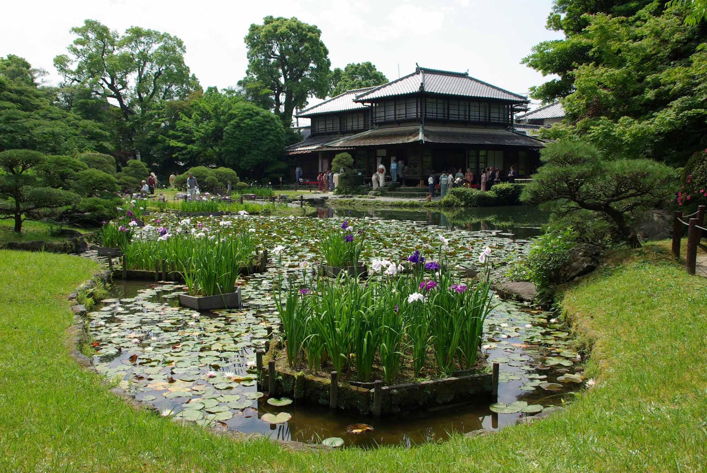
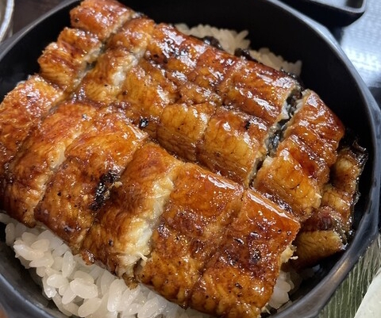
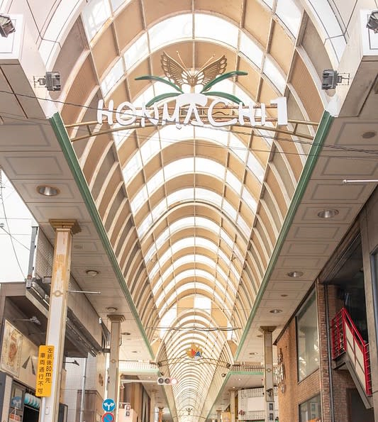
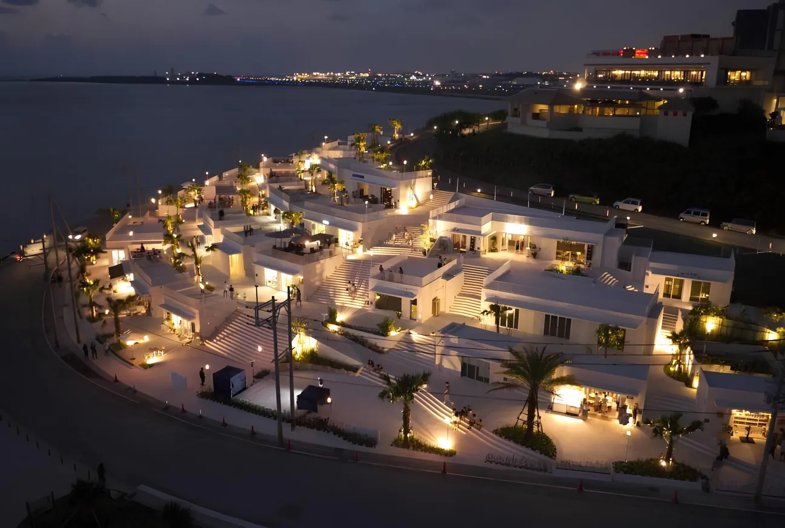
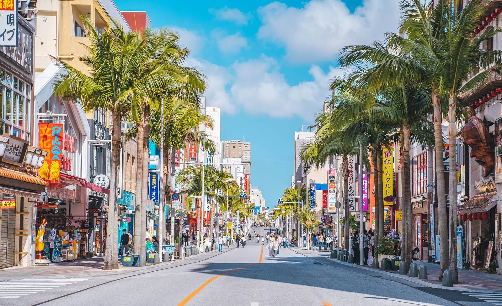

第一站
鹿兒島 Kagoshima
（仙巖園+櫻島）山海慢遊全日版
日期：3/10 (週二)
靠岸：08:00~20:00
港口：馬林港
交通：計程車 + 渡輪
策略： 上午看庭園，下午搭船去火山腳下泡足湯，傍晚逛街吃黑豬肉。
預估車資：總計約 ¥11,000~¥13,000 (每人約 ¥2,750~¥3,250 / 台幣 $600~$720)
09:30~12:30

13:00~15:30

17:30~18:30
第二站
熊本 Kumamoto
（八代）慢活悠閒行程
日期：3/11 (週三)
靠岸：07:00~16:00
港口：八代港
交通：全程計程車
策略： 在八代市內，早上在船上悠閒吃完早餐再出發，零壓力的深度漫遊。
預估車資：總計約 ¥6,000~¥8,000 (每人約 ¥1,500~¥2,000 / 台幣 $330~$440)
09:30~10:30

10:30~11:30

11:30~13:00

13:00~14:00

第三站
沖繩那霸 Naha
（瀨長島+波上宮）夕陽海景版
日期：3/12 (週四)
靠岸：15:00~22:00
港口：若狹或泊港
交通：全程計程車
策略： 下午才抵達，直衝那霸最美的夕陽景點，再去市區吃晚餐。
預估車資：總計約 ¥7,000~¥9,000 (每人約 ¥1,750~¥2,250 / 台幣 $390~$500)
17:10~18:40

19:10~20:40
